tmap v4: a sneak peek
Martijn Tennekes
2024-09-26
Source:vignettes/tmap_sneak_peek.Rmd
tmap_sneak_peek.RmdThe next major update of tmap will be a massive one. Although tmap is well-known and widely used in the R spatial community, there are a couple of bottlenecks that make it difficult to maintain and extend. The upcoming tmap version 4 (tmap v4) aims to overcome these shortcomings. It is still fully in the development, but now is a good time for a sneak peek.
Extendability
First and foremost, tmap v4 will be fully extendable. More precisely, the following aspects can be extended:
Map layers: we are not limited anymore by the fixed set of
tm_polygons(),tm_lines(),tm_symbols(), andtm_raster()(and their derivatives such astm_borders()andtm_dots()), but any layer of interest can be developed as an extension of tmap. We will illustrate this below withtm_cartogram(). Other layers that are worthwhile to implement aretm_donuts(),tm_hexagons(),tm_network(),tm_hillshade(), etc.Aesthetics: there will be many more visual variables available. We will illustrate this in the next section, where we already implemented 5 new aesthetics for
tm_polygons(). Moreover, it will be much easier for developers to add new visual variables to map layer functions.Graphics Engine: tmap v3 contains two modes:
plotandview(which are based ongridgraphics andleafletrespectively) but the framework makes it possible to add other modes as well.Spatial data classes: tmap v3 is build on
sfandstars. This will also be the case for tmap v4, but for developers, it will be easier to incorporate other classes as well, likeSpatRasterandSpatVectorfromterra.
Aesthetics
As mentioned before, we have added more aesthetics (visual variables), and it will be easier for developers to add new aesthetics. We have reordered the arguments that specify and configure the aesthetics which will be illustrated below.
The arguments that specify aesthetics themselves will remain the
same. E.g., the main aesthetic in tm_polygons() is
fill, which defines the fill color of the polygons.
However, the other arguments of the layer functions are organized differently. Thus, each aesthetic will only have four arguments:
- the aesthetic itself (
fill) - the scale (
fill.scale) - the legend (
fill.legend) - an argument that decides whether scales are applied freely across
facets (
fill.free)
The scales and legends are discussed in the next sections.
Below you can see a basic comparison of the tmap version 3 and 4 syntax:
# tmap v3
tm_shape(World) +
tm_polygons(fill = "HPI", palette = "Earth", title = "Happy Planet Index")
# tmap v4
tm_shape(World) +
tm_polygons(fill = "HPI",
fill.scale = tm_scale_intervals(values = "purple_green"),
fill.legend = tm_legend(title = "Happy Planet Index"))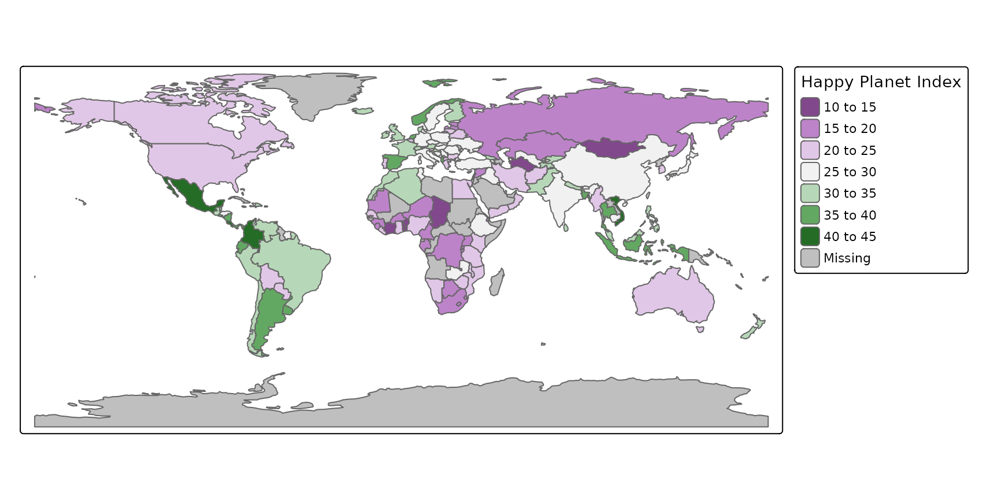
In tmap v4, tm_polygons() will have the
aesthetics fill, col, fill_alpha,
col_alpha, lwd, lty, and
eventually also pattern. The other standard map layers will
also have additional aesthetics. A data variable can be mapped to each
of them, using different scales (see next section for an overview). The
next example uses fill, lwd (line width), and
lty (line type) as aesthetics:
# tmap v3
# ... not possible :(
# tmap v4
World$life_exp_class = cut(World$life_exp, breaks = seq(40, 85, by = 15))
tm_shape(World, crs = "+proj=eck4") +
tm_polygons(fill = "HPI",
fill.scale = tm_scale_continuous(values = "purple_green"),
fill.legend = tm_legend(title = "Happy Planet Index"),
lwd = "well_being",
lwd.scale = tm_scale_continuous(value.neutral = 1,
values = c(0, 5),
label.na = ""),
lwd.legend = tm_legend(title = "Well Being"),
lty = "life_exp_class",
lty.scale = tm_scale_ordinal(values = c("dotted", "dashed", "solid"),
value.na = "blank",
value.neutral = "solid",
label.na = ""),
lty.legend = tm_legend(title = "Life Expectancy")
)## [plot mode] legend/component: Some components or legends are too high and are therefore rescaled. Set the tmap option 'component.autoscale' to FALSE to disable rescaling.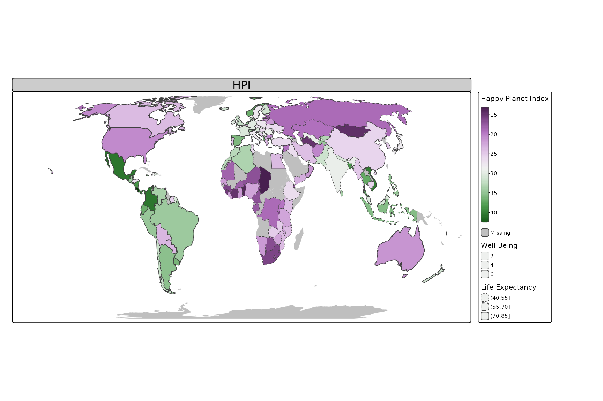
Besides these visual mapping aesthetics, which map data variables to visual variables, there is also another group of aesthetics, namely (data-driven) transformation aesthetics. They are used to transform spatial objects. We call it data-driven, because content data are used as input for this spatial transformation. An example is the cartogram, which will be shown in the next section. The polygons are distorted such that the size will be (approximately) proportional to a data variable.
Map layers (e.g. cartogram)
It will be easy for developers to add new map layers as extension. We
illustrate this by a new map layer, tm_cartogram().
Cartograms could already be made with tmap v3, but it explicitly required transforming the data using the cartogram package before mapping.
# tmap v3
library(cartogram)
World_carto = World |>
sf::st_transform(World, crs = "+proj=eck4") |>
cartogram_cont(weight = "pop_est")
tm_shape(World_carto, crs = "+proj=eck4") +
tm_polygons(fill,
palette = "Earth",
title = "Happy Planet Index")In tmap v4, there will be a direct function
tm_cartogram() (using the cartogram
package under the hood), which uses the transformation aesthetic
size and inherits all visual aesthetics from
tm_polygons():
# tmap v4
if (requireNamespace("cartogram")) {
tm_shape(World, crs = "+proj=eck4") +
tm_cartogram(size = "pop_est",
fill = "HPI",
fill.scale = tm_scale_intervals(values = "purple_green"),
fill.legend = tm_legend(title = "Happy Planet Index")) +
tm_place_legends_right(width = 0.2)
}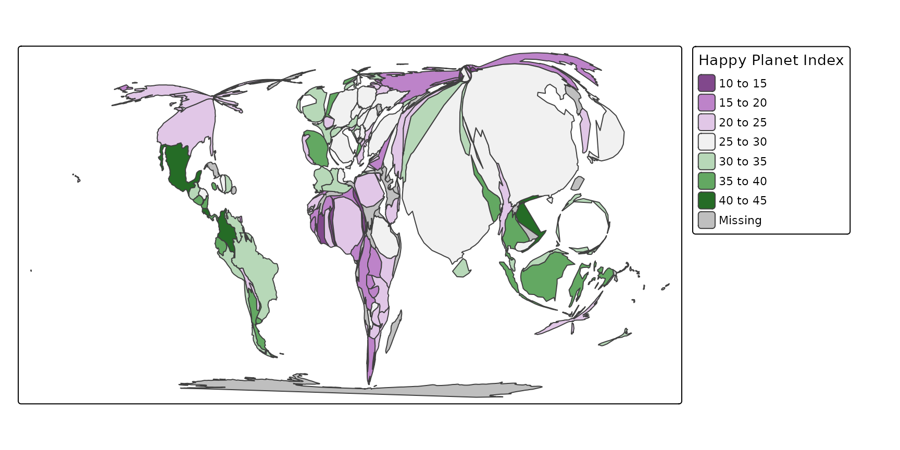
A nice benefit of having cartograms directly in tmap is that it makes possible to use the available scaling functions. For example, suppose we want to apply a log 10 scale in order to make the cartogram a bit more “balanced”:
# tmap v3
library(cartogram)
World_carto = World |>
sf::st_transform(World, crs = "+proj=eck4") |>
dplyr::mutate(pop_est_log10 = log10(pop_est)) |>
cartogram_cont(weight = "pop_est_log10")
tm_shape(World_carto) +
tm_polygons(fill,
palette = "Earth",
title = "Happy Planet Index")
# tmap v4
if (requireNamespace("cartogram")) {
tm_shape(World, crs = "+proj=eck4") +
tm_cartogram(size = "pop_est",
size.scale = tm_scale_continuous_log1p(),
fill = "HPI",
fill.scale = tm_scale_intervals(values = "purple_green"),
fill.legend = tm_legend(title = "Happy Planet Index")) +
tm_place_legends_right(width = 0.2)
}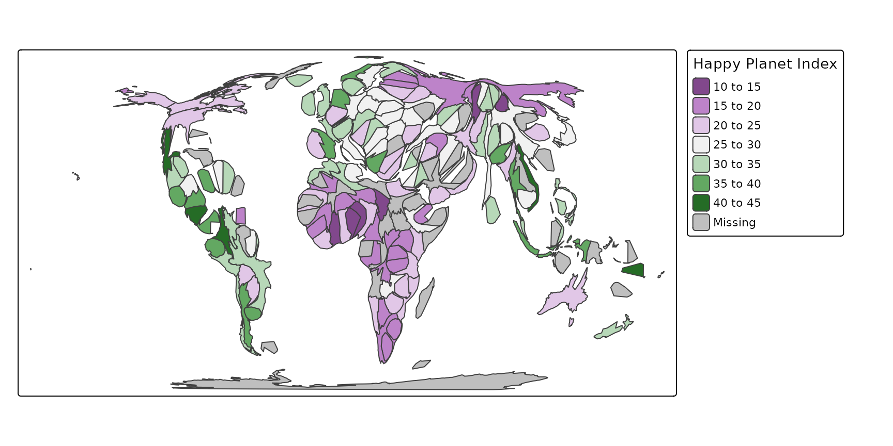
Scales
Scales are used to map data variables to visual variables. Scales are not new in map v4, but they are used more explicitly.
The following table shows the scales that are currently available:
| Scale | Main Data Type | Example |
|---|---|---|
tm_scale_categorical() |
categorical (factor) |
Fruit type |
tm_scale_ordinal() |
categorical (ordered) |
Education level |
tm_scale_intervals() |
numerical (integer or numeric) |
Age group |
tm_scale_continuous() |
numerical (numeric) |
Height |
tm_scale_log10() |
numerical (numeric) |
Income |
tm_scale_discrete() |
numerical (integer) |
Number of children |
The main data type (second column) is the data type for which the
scale is supposed to be applied. Any scale can be applied to any data
type (even though it might not make sense), with one exception:
continuous (and log10) scales cannot be applied to visual variables that
can only take a finite set of values. Examples are symbol shape and line
type. By default, tm_scale_categorical(),
tm_scale_ordinal(), and tm_scale_intervals()
are used for data of class factor, ordered and
numeric respectively. Scales for date/time variables will
be included as well.
The main argument of each scale function is values,
which are the values for the visual variables. The following table shows
which type of values are required for which visual variable:
| Visual variable | Type of values |
|---|---|
fill and col
|
Color palette |
size and lwd
|
(Exponential) value range |
lty |
Line types, e.g. "dashed"
|
shape |
Shapes (probably similar as in tmap v3) |
fill_alpha and col_alpha
|
Value range |
The default values depend not only on the visual variable, but also
on the scale and on whether data values are diverging. For instance, if
tm_scale_intervals() is applied to a numeric variable with
both negative and positive values where the visual variable is
fill, then a diverging color palette is used.
The following map illustrates what happens when the six scale functions are applied to the same data variable. We use the variable life expectancy (which we round in order to make sure the number of unique values is limited):
Scales existed in tmap v3, but they were applied implicitly via several arguments:
# tmap v3
tm_shape(Africa) +
tm_polygons(rep("life_exp", 5), style = c("cat", "cat", "pretty", "cont", "log10"),
palette = list("Set2", "YlOrBr", "YlOrBr", "YlOrBr", "YlOrBr"),
title = "") +
tm_layout(panel.labels = c("categorical scale", "ordinal scale", "intervals scale", "continuous scale", "log10 scale"),
inner.margins = c(0.05, 0.2, 0.1, 0.05),
legend.text.size = 0.5)
# discrete scale is not possible directly, but only via interval breaks:
tm_shape(Africa) +
tm_polygons("life_exp", style = "fixed",
palette = "YlOrBr",
breaks = 49:76,
as.count = TRUE,
title = "") +
tm_layout(panel.labels = "discrete scale",
inner.margins = c(0.05, 0.2, 0.1, 0.05),
legend.text.size = 0.5)
# tmap v4
tm_shape(Africa) +
tm_polygons(rep("life_exp", 6),
fill.scale = list(tm_scale_categorical(),
tm_scale_ordinal(),
tm_scale_intervals(),
tm_scale_continuous(),
tm_scale_continuous_log(),
tm_scale_discrete()),
fill.legend = tm_legend(title = "", position = tm_pos_in("left", "top"))) +
tm_layout(panel.labels = c("tm_scale_categorical", "tm_scale_ordinal", "tm_scale_intervals", "tm_scale_continuous", "tm_scale_continuous_log", "tm_scale_discrete"),
inner.margins = c(0.05, 0.2, 0.1, 0.05),
legend.text.size = 0.5)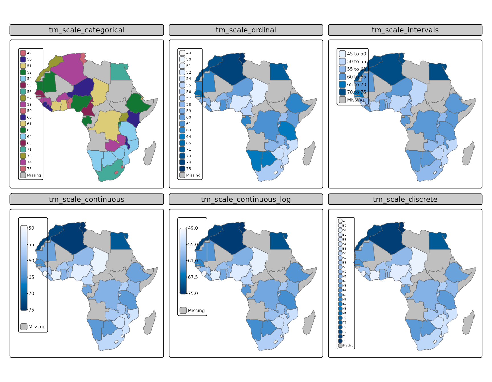
Multivariate Scales
It will be possible to assign multiple variables for one aesthetic.
This can be done with the function tm_mv() (which stands
for multivariate). An example is the bivariate choropleth, which is not
yet implemented, but will definitely be.
# tmap v4
tm_shape(World) +
tm_symbols(
fill = tm_vars(c("well_being", "footprint"), multivariate = TRUE),
fill.scale = tm_scale_bivariate(scale1 = tm_scale_intervals(breaks = c(2, 5, 6, 8)),
scale2 = tm_scale_intervals(breaks = c(0, 3, 6, 20)),
values = "brewer.qualseq")
)## Labels abbreviated by the first letters, e.g.: "0 to 3" => "0"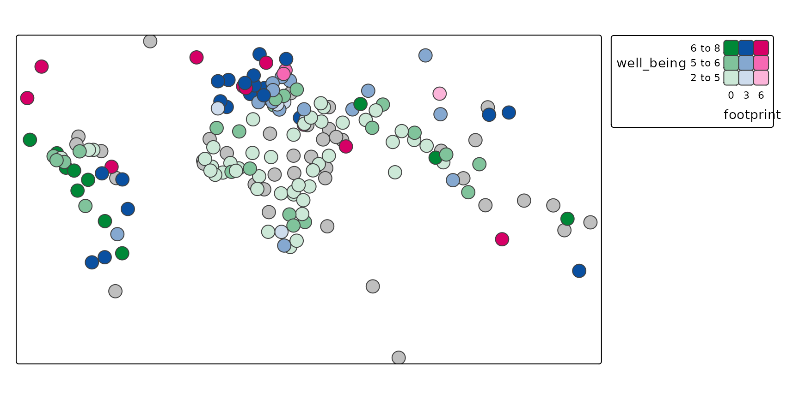
Legends
As you may have noticed in the previous examples, the legends look a bit differently by default.
Positioning
Legends are currently placed outside the map by default in tmap v4. Why? Simply because there is often more space than inside the map.
Furthermore, it is possible to place legends on different locations across the map:
# tmap v3
# ... not possible :(
# tmap v4
tm_shape(World) +
tm_symbols(fill = "HPI",
size = "pop_est",
shape = "income_grp",
size.scale = tm_scale(value.neutral = 0.5),
fill.legend = tm_legend("Happy Planet Index", position = tm_pos_in("left", "top")),
size.legend = tm_legend("Population", position = tm_pos_out("left", "center")),
shape.legend = tm_legend("Income Group", position = tm_pos_out("center", "bottom")))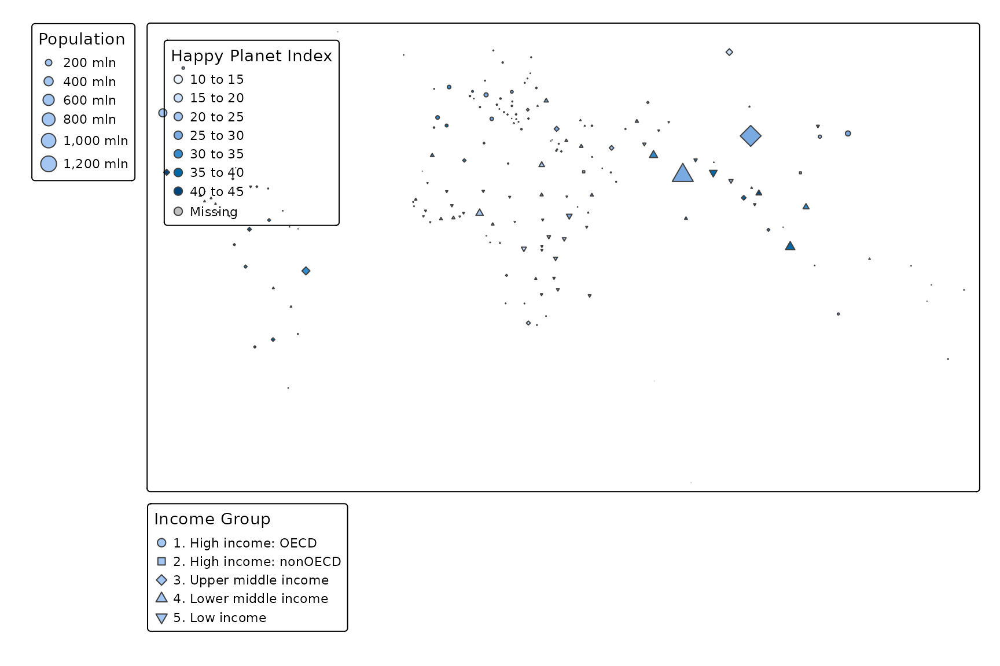
tmap v3 contains many (often complicated) options
for rather simple things. These options are set globally via
tmap_options() or within a single plot with
tm_layout().
In tmap v4, the directly related to the layout are
accessible via tm_layout(). However, to ease its use, there
will be a bunch of handy shortcut functions, such as
tm_place_legends_left():
# tmap v3
tm_shape(World) +
tm_symbols(fill = "HPI",
size = "pop_est",
shape = "income_grp") +
tm_layout(legend.outside.position = "left", legend.outside.size = 0.2)
# tmap v4
tm_shape(World) +
tm_symbols(fill = "HPI",
size = "pop_est",
shape = "income_grp",
size.scale = tm_scale(value.neutral = 0.5)) +
tm_place_legends_left(0.2)## [plot mode] legend/component: Some components or legends are too high and are therefore rescaled. Set the tmap option 'component.autoscale' to FALSE to disable rescaling.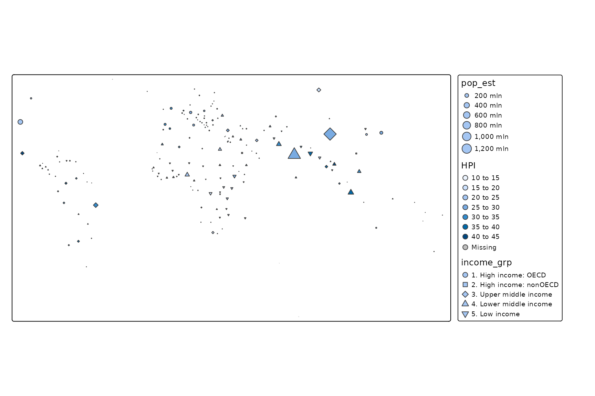
Combined legends
Another new feature is possibility to combine legends directly, which was quite a hassle in tmap v3.
# tmap v3
tm_shape(metro) +
tm_symbols(col = "pop2020",
n = 4,
size = "pop2020",
legend.size.show = FALSE,
legend.col.show = FALSE) +
tm_add_legend("symbol",
col = RColorBrewer::brewer.pal(4, "YlOrRd"),
border.col = "grey40",
size = ((c(10, 20, 30, 40) * 1e6) / 40e6) ^ 0.5 * 2,
labels = c("0 mln to 10 mln", "10 mln to 20 mln", "20 mln to 30 mln", "30 mln to 40 mln"),
title = "Population in 2020") +
tm_layout(legend.outside = TRUE, legend.outside.position = "bottom")
# tmap v4
tm_shape(metro) +
tm_symbols(fill = "pop2020",
fill.legend = tm_legend("Population in 2020"),
size = "pop2020",
size.scale = tm_scale_intervals(),
size.legend = tm_legend_combine("fill"))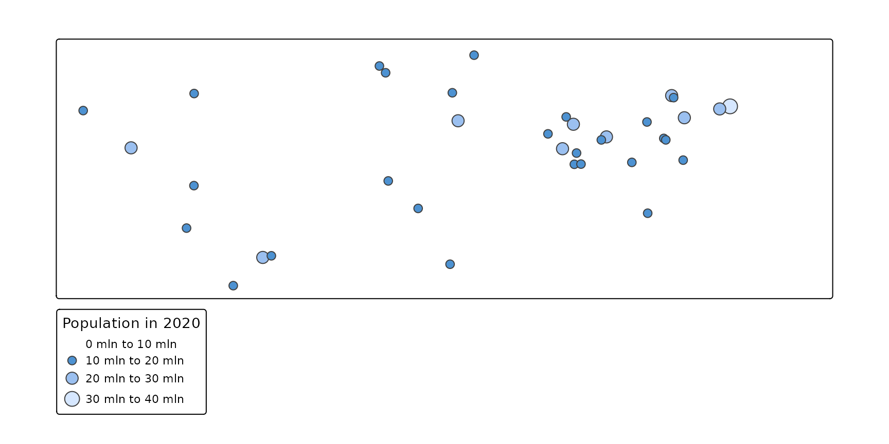
Facets
In tmap v4, there are convenient wrappers
tm_facet_wrap() and tm_facet_grid(), where the
former wraps the facets, and the latter places the facets in a grid
layout.
Furthermore, each visual variable has a free argument,
which determines whether scales are free (TRUE) or shared
(FALSE) across facets.
In tmap v3 this free argument could be
set via tm_facets(), whereas in tmap v4
this argument has been moved to the layer functions:
# tmap v3
tm_shape(World) +
tm_borders() +
tm_shape(World) +
tm_polygons("life_exp") +
tm_facets("continent", nrow = 1, free.scales.fill = FALSE, free.coords = FALSE)
# tmap v4
tm_shape(World, crs = "+proj=robin") +
tm_borders() +
tm_shape(World) +
tm_polygons("life_exp", fill.free = FALSE) +
tm_facets_wrap("continent")## [plot mode] fit legend/component: Some legend items or map compoments do not fit well, and are therefore rescaled. Set the tmap option 'component.autoscale' to FALSE to disable rescaling.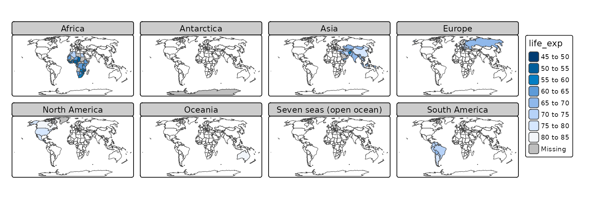
# tmap v3
tm_shape(World) +
tm_borders() +
tm_shape(World) +
tm_polygons("life_exp") +
tm_facets("continent", nrow = 1, free.scales.fill = TRUE, free.coords = FALSE)
tm_shape(World, crs = "+proj=robin") +
tm_borders() +
tm_shape(World) +
tm_polygons("life_exp", fill.free = TRUE) +
tm_facets_stack("continent")## Variable(s) "fill" only contains NAs. Legend disabled for tm_scale_intervals, unless breaks are specified
## Variable(s) "fill" only contains NAs. Legend disabled for tm_scale_intervals, unless breaks are specified## [plot mode] fit legend/component: Some legend items or map compoments do not fit well, and are therefore rescaled. Set the tmap option 'component.autoscale' to FALSE to disable rescaling.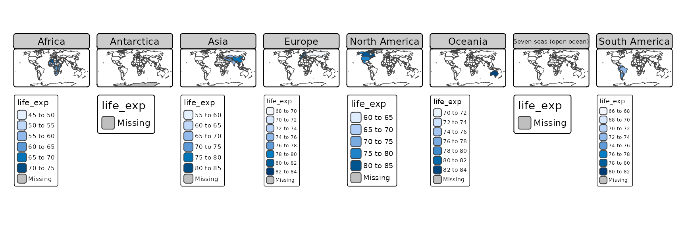
New in tmap v4 is that for facet grid, the
free argument can be specified differently for rows and
columns, as we will show in the next complex (sorry for that)
example:
# tmap v3
# ... not possible :(
# tmap v4
tm_shape(World, crs = "+proj=robin") +
tm_borders() +
tm_shape(World) +
tm_polygons(fill = "life_exp",
fill.scale = tm_scale_intervals(values = "brewer.greens"),
fill.free = c(rows = FALSE, columns = TRUE)) +
tm_symbols(size = "gdp_cap_est",
size.free = c(rows = TRUE, columns = FALSE),
fill = "red") +
tm_facets_grid("income_grp", "economy") +
tm_layout(meta.margins = c(.2, 0, 0,.1))## [plot mode] fit legend/component: Some legend items or map compoments do not fit well, and are therefore rescaled. Set the tmap option 'component.autoscale' to FALSE to disable rescaling.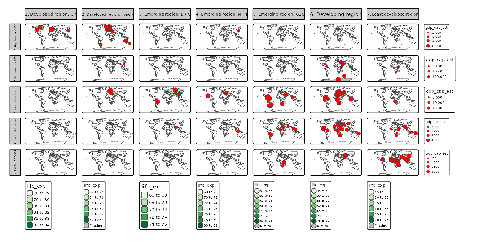
What you see in the map is that life expectancy is shown as polygon fill in green, and GDP per capita as red bubbles. The maps are grouped by income group (rows) and economy (columns). The scale for life expectancy is set to free for the columns. This means that the scale will be applied for each column separately, with a legend per column. The scale for GDP per capita is applied separately for each row.
Graphic Engines (modes)
Just like tmap v3, there will be a
"plot" and a "view" mode. However, the
framework used in tmap v4 also facilitates developers
to write plotting methods for other modes.
For instance, CesiumJS is a great JavaScript library for 3d globe visualizations. It would be awesome to include this in R. When there is a low-level interface between CesiumJS and R (similar to the R package leaflet being an interface between the JS library leaflet and R), it will be relatively easy for developers to add a new mode for these 3d visualizations in tmap v4.
Backward compatibility
In this early development stage, tmap v3 code will
not work with tmap v4. However, when tmap
v4 will be stable, it will be backwards compatible. Layer
function arguments that are no longer used, such as breaks
and palette will be deprecated, and internally redirected
to the new scale functions.
Furthermore, some of the options will have other options in tmap v4. For instance, legends will be placed outside of the maps by default, and there will be a small space between legend items as shown above.
In order to keep the layout as close as possible to tmap
v3, there will be a style which will set the options back to
the settings used by default in tmap v3. This can be
set with just one command: tmap_style("tmap_v3")
Color palettes
There will be a huge number of directly available color palettes. We have not settled on the exact details, e.g. which palettes to include, and how they can be obtained. Ideas are welcome (https://github.com/r-tmap/tmap/issues/566).
In the current development version, there is a function similar to
tmaptools::palette_explorer(), which renders a long png in
the viewer pane of RStudio or the browser:
# tmap v4
tmap_show_palettes()
(click on the image to see the full png)
It is also possible to render this for color blindness simulation,
e.g.:
tmap_show_palettes(color_vision_deficiency = "deutan").
All default palettes that we use will be usable for color blind people.
Suggestions
Do you have any suggestions? Please let us know! Via https://github.com/r-tmap/tmap/issues, and please use the tmap_v4 tag.